<!DOCTYPE html>
<html lang="en">
  <head>
    <meta charset="utf-8" />
    <meta name="viewport" content="width=device-width, initial-scale=1.0, maximum-scale=1.0, user-scalable=no" />

    <title></title>
    <link rel="stylesheet" href="dist/reveal.css" />
    <link rel="stylesheet" href="dist/theme/custom1.css" id="theme" />
    <link rel="stylesheet" href="plugin/highlight/atom-one-light.css" />
	<link rel="stylesheet" href="css/layout.css" />
	<link rel="stylesheet" href="plugin/customcontrols/style.css">
	<link rel="stylesheet" href="plugin/chalkboard/style.css">


    <script defer src="dist/fontawesome/all.min.js"></script>

	<script type="text/javascript">
		var forgetPop = true;
		function onPopState(event) {
			if(forgetPop){
				forgetPop = false;
			} else {
				parent.postMessage(event.target.location.href, "app://obsidian.md");
			}
        }
		window.onpopstate = onPopState;
		window.onmessage = event => {
			if(event.data == "reload"){
				window.document.location.reload();
			}
			forgetPop = true;
		}

		function fitElements(){
			const itemsToFit = document.getElementsByClassName('fitText');
			for (const item in itemsToFit) {
				if (Object.hasOwnProperty.call(itemsToFit, item)) {
					var element = itemsToFit[item];
					fitElement(element,1, 1000);
					element.classList.remove('fitText');
				}
			}
		}

		function fitElement(element, start, end){

			let size = (end + start) / 2;
			element.style.fontSize = `${size}px`;

			if(Math.abs(start - end) < 1){
				while(element.scrollHeight > element.offsetHeight){
					size--;
					element.style.fontSize = `${size}px`;
				}
				return;
			}

			if(element.scrollHeight > element.offsetHeight){
				fitElement(element, start, size);
			} else {
				fitElement(element, size, end);
			}		
		}


		document.onreadystatechange = () => {
			fitElements();
			if (document.readyState === 'complete') {
				if (window.location.href.indexOf("?export") != -1){
					parent.postMessage(event.target.location.href, "app://obsidian.md");
				}
				if (window.location.href.indexOf("print-pdf") != -1){
					let stateCheck = setInterval(() => {
						clearInterval(stateCheck);
						window.print();
					}, 250);
				}
			}
	};


        </script>
  </head>
  <body>
    <div class="reveal">
      <div class="slides"><section  data-markdown><script type="text/template"><!-- .slide: class="drop" -->
<div class="" style="position: absolute; left: 0px; top: 0px; height: 700px; width: 960px; min-height: 700px; display: flex; flex-direction: column; align-items: center; justify-content: center" absolute="true">

# Inheritance
</div></script></section><section  data-markdown><script type="text/template"><!-- .slide: class="drop" -->
<div class="" style="position: absolute; left: 0px; top: 0px; height: 700px; width: 960px; min-height: 700px; display: flex; flex-direction: column; align-items: center; justify-content: center" absolute="true">

## Agenda

1. **The Problem:** Code Duplication & Maintenance
    
2. **The Solution:** What is Inheritance?
    
3. **Core Concepts:** The "Is-A" Relationship
    
4. **Java Implementation:**
    
    - `extends` keyword
        
    - Superclass & Subclass
        
5. **Method Overriding:** Specializing Behavior
    
6. **The `super` Keyword:** Accessing the Parent
    
7. **Inheritance and Constructors**
    
8. **Benefits of Inheritance**
</div></script></section><section ><section data-markdown><script type="text/template"><!-- .slide: class="drop" -->
<div class="" style="position: absolute; left: 0px; top: 0px; height: 700px; width: 960px; min-height: 700px; display: flex; flex-direction: column; align-items: center; justify-content: center" absolute="true">

## The Problem: Code Duplication

Let's imagine we're building a system for a university. We might have a `Student` class and a `Professor` class.
</div></script></section><section data-markdown><script type="text/template"><!-- .slide: class="drop" -->
<div class="" style="position: absolute; left: 0px; top: 0px; height: 700px; width: 960px; min-height: 700px; display: flex; flex-direction: column; align-items: center; justify-content: center" absolute="true">

### The `Student` class

```java
// Student.java
public class Student {
    private String name;
    private String id;
    private double gpa;
    public Student(String name, String id, double gpa) {
        this.name = name;
        this.id = id;
        this.gpa = gpa;
    }
    public String getName() { return name; }
    public String getId() { return id; }
    // ... other methods
}
```
</div></script></section><section data-markdown><script type="text/template"><!-- .slide: class="drop" -->
<div class="" style="position: absolute; left: 0px; top: 0px; height: 700px; width: 960px; min-height: 700px; display: flex; flex-direction: column; align-items: center; justify-content: center" absolute="true">

### The `Professor` class

```java
// Professor.java
public class Professor {
    private String name;
    private String id;
    private String department;
    public Professor(String name, String id, String dept) {
        this.name = name;
        this.id = id;
        this.department = dept;
    }
    public String getName() { return name; }
    public String getId() { return id; }
    // ... other methods
}
```

Notes: _Point out the duplicated fields (`name`, `id`) and methods (`getName`, `getId`). Ask the students: "What happens if we need to change how an ID is stored or validated? We'd have to change it in two places. This is inefficient and error-prone." This sets the stage for why we need a better solution._
</div></script></section></section><section  data-markdown><script type="text/template"><!-- .slide: class="drop" -->
<div class="" style="position: absolute; left: 0px; top: 0px; height: 700px; width: 960px; min-height: 700px; display: flex; flex-direction: column; align-items: center; justify-content: center" absolute="true">

## What is Inheritance?

**Inheritance** is a fundamental principle of Object-Oriented Programming (OOP).

It allows a new class to be based on an existing class. The new class **inherits** the properties (fields) and behaviors (methods) of the existing class.

This models a **"is-a" relationship**.

- A `Student` **is-a** `Person`.
    
- A `Professor` **is-a** `Person`.
    
- A `Car` **is-a** `Vehicle`.
    
- A `Dog` **is-a** `Animal`.
    

This allows us to create a general class first, and then create more specialized classes from it.
</div></script></section><section ><section data-markdown><script type="text/template"><!-- .slide: class="drop" -->
<div class="" style="position: absolute; left: 0px; top: 0px; height: 700px; width: 960px; min-height: 700px; display: flex; flex-direction: column; align-items: center; justify-content: center" absolute="true">

## Core Terminology

We use specific terms to describe this relationship:

- **Superclass (or Parent Class, Base Class):** The class being inherited from. (e.g., `Person`)
    
- **Subclass (or Child Class, Derived Class):** The class that inherits. (e.g., `Student`)
</div></script></section><section data-markdown><script type="text/template"><!-- .slide: class="drop" -->
<div class="" style="position: absolute; left: 0px; top: 0px; height: 700px; width: 960px; min-height: 700px; display: flex; flex-direction: column; align-items: center; justify-content: center" absolute="true">

## Class Diagrams





Notes: *Emphasize that the arrow in UML diagrams points from the subclass UP to the superclass. It means "Student derives from Person" or "Student extends Person".*
</div></script></section></section><section ><section data-markdown><script type="text/template"><!-- .slide: class="drop" -->
<div class="" style="position: absolute; left: 0px; top: 0px; height: 700px; width: 960px; min-height: 700px; display: flex; flex-direction: column; align-items: center; justify-content: center" absolute="true">

## The `extends` Keyword 

In Java, we use the `extends` keyword to establish an inheritance relationship. Let's refactor our earlier example. 

First, we create the `Person` superclass with the common attributes.
</div></script></section><section data-markdown><script type="text/template"><!-- .slide: class="drop" -->
<div class="" style="position: absolute; left: 0px; top: 0px; height: 700px; width: 960px; min-height: 700px; display: flex; flex-direction: column; align-items: center; justify-content: center" absolute="true">

### The `Person` class

Note the **`protected`** keyword. This is used when we want the fields to be *private to a class AND its subclasses*.

```java
// Person.java (The Superclass) 
public class Person { 
	protected String name; 
	protected String id; 
	public Person(String name, String id) { 
		this.name = name; this.id = id; 
	} 
	public String getName() { 
		return name; 
	} 
	public String getId() { 
		return id; 
	} 
	public void displayInfo() { 
		System.out.println("Name: " + name + ", ID: " + id); 
	} 
} 
```
</div></script></section><section data-markdown><script type="text/template"><!-- .slide: class="drop" -->
<div class="" style="position: absolute; left: 0px; top: 0px; height: 700px; width: 960px; min-height: 700px; display: flex; flex-direction: column; align-items: center; justify-content: center" absolute="true">

### The `Student` class

Now, `Student` can *extend* `Person`. 
```java 
// Student.java (The Subclass) 
public class Student extends Person { 
	// name and id are inherited! 
	private double gpa; // We'll fix this constructor later... 
} 
```
</div></script></section></section><section  data-markdown><script type="text/template"><!-- .slide: class="drop" -->
<div class="" style="position: absolute; left: 0px; top: 0px; height: 700px; width: 960px; min-height: 700px; display: flex; flex-direction: column; align-items: center; justify-content: center" absolute="true">

## What is Inherited? 

* A subclass inherits the **public** and **protected** members (fields and methods) of its superclass. 
* **You DO NOT inherit `private` members.** While they exist in the superclass part of the object, the subclass cannot access them directly. You must use public getters/setters. 
* **You DO NOT inherit constructors.** A subclass must define its own constructors. 
```java 
public class Main { 
	public static void main(String[] args) { 
		Student s1 = new Student(...); 
		// These methods are INHERITED from Person! 
		s1.getName(); 
		s1.getId(); 
		s1.displayInfo(); 
	} 
} 
```

Notes: *This is a key point of confusion. Stress that private members are not directly accessible. It's like having a locked box inside your house; you know it's there, but only the original owner (the superclass) has the key.* --
</div></script></section><section ><section data-markdown><script type="text/template"><!-- .slide: class="drop" -->
<div class="" style="position: absolute; left: 0px; top: 0px; height: 700px; width: 960px; min-height: 700px; display: flex; flex-direction: column; align-items: center; justify-content: center" absolute="true">

## Method Overriding 

What if a subclass needs a more specific version of an inherited method? 

**Method Overriding** is when a subclass provides its own implementation for a method that it inherited from its superclass. 

The method signature (name, parameters) in the subclass **must be identical** to the one in the superclass.
</div></script></section><section data-markdown><script type="text/template"><!-- .slide: class="drop" -->
<div class="" style="position: absolute; left: 0px; top: 0px; height: 700px; width: 960px; min-height: 700px; display: flex; flex-direction: column; align-items: center; justify-content: center" absolute="true">

Let's override the `displayInfo()` method in `Student`. 

```java 
// In Student.java 
public class Student extends Person { 
	private double gpa; 
	// ... constructor ... 
	// Override the displayInfo method 
	@Override 
	public void displayInfo() { 
		System.out.println(
			"Student Name: " + getName() + 
			", ID: " + getId() + 
			", GPA: " + gpa);
	}
} 
``` 

Notes: *Explain the `@Override` annotation. It's not required by the language, but it's a huge help. If you misspell the method name or change the parameters, the compiler will give you an error, telling you that you're not actually overriding anything.*
</div></script></section></section><section ><section data-markdown><script type="text/template"><!-- .slide: class="drop" -->
<div class="" style="position: absolute; left: 0px; top: 0px; height: 700px; width: 960px; min-height: 700px; display: flex; flex-direction: column; align-items: center; justify-content: center" absolute="true">

## The `super` Keyword: Accessing Superclass Members 

The `super` keyword is a reference to the superclass. It can be used for two main purposes: 
1. To call a method from the superclass. 
2. To call a constructor from the superclass.
</div></script></section><section data-markdown><script type="text/template"><!-- .slide: class="drop" -->
<div class="" style="position: absolute; left: 0px; top: 0px; height: 700px; width: 960px; min-height: 700px; display: flex; flex-direction: column; align-items: center; justify-content: center" absolute="true">

Let's improve our overridden `displayInfo` method to reuse the code from the `Person` class. 
```java 
// In Student.java 
@Override 
public void displayInfo() { 
	super.displayInfo(); // Calls the Person's displayInfo() method 
	System.out.println("GPA: " + this.gpa); 
} 
``` 

**Output would be:**
```
Name: Alice, ID: 12345
GPA: 3.9
```

This is much better! We avoid duplicating the code for printing the name and ID.
</div></script></section></section><section ><section data-markdown><script type="text/template"><!-- .slide: class="drop" -->
<div class="" style="position: absolute; left: 0px; top: 0px; height: 700px; width: 960px; min-height: 700px; display: flex; flex-direction: column; align-items: center; justify-content: center" absolute="true">

## Inheritance and Constructors 

As we said, constructors are **not inherited**. 

The rule is: **A superclass must be fully constructed before its subclass can be constructed.** 

In practice, this means the first line of any subclass constructor **must** be a call to a superclass constructor, using **`super()`**.
</div></script></section><section data-markdown><script type="text/template"><!-- .slide: class="drop" -->
<div class="" style="position: absolute; left: 0px; top: 0px; height: 700px; width: 960px; min-height: 700px; display: flex; flex-direction: column; align-items: center; justify-content: center" absolute="true">

```java 
// In Student.java 
public class Student extends Person { 
	private double gpa; 
	public Student(String name, String id, double gpa) { 
		// Must be the VERY FIRST line 
		super(name, id); // Calls the Person(String, String) constructor 
		// Now, initialize subclass-specific fields 
		this.gpa = gpa; 
	} 
	// ... other methods ... 
} 
```

Notes: *Emphasize that `super()` MUST be the first statement. If you don't explicitly call `super()`, Java will implicitly insert a call to the no-argument constructor `super()` for you. If the superclass doesn't have a no-argument constructor, this will result in a compile-time error. This is a very common bug for beginners.*
</div></script></section></section><section ><section data-markdown><script type="text/template"><!-- .slide: class="drop" -->
<div class="" style="position: absolute; left: 0px; top: 0px; height: 700px; width: 960px; min-height: 700px; display: flex; flex-direction: column; align-items: center; justify-content: center" absolute="true">

## Putting It All Together 

```java
// Person.java (Superclass) class Person {  
    private String name;  
    private String id;  
  
    public Person(String name, String id) { /* ... */ }  
  
    public String getName() {  
        return name;  
    }  
  
    public void displayInfo() {  
        System.out.println("Name: " + name + ", ID: " + id);  
    }  
}
```
</div></script></section><section data-markdown><script type="text/template"><!-- .slide: class="drop" -->
<div class="" style="position: absolute; left: 0px; top: 0px; height: 700px; width: 960px; min-height: 700px; display: flex; flex-direction: column; align-items: center; justify-content: center" absolute="true">

```java
// Student.java (Subclass)  
class Student extends Person {  
    private double gpa;  
  
    public Student(String name, String id, double gpa) {  
        super(name, id);  
        this.gpa = gpa;  
    }  
  
    @Override  
    public void displayInfo() {  
        super.displayInfo();  
        System.out.println(" GPA: " + this.gpa);  
    }  
}
```
</div></script></section><section data-markdown><script type="text/template"><!-- .slide: class="drop" -->
<div class="" style="position: absolute; left: 0px; top: 0px; height: 700px; width: 960px; min-height: 700px; display: flex; flex-direction: column; align-items: center; justify-content: center" absolute="true">

```java
// Main.java  
public class Main {  
    public static void main(String[] args) {  
        Person p = new Person("Dr. Smith", "p987");  
        Student s = new Student("Alice", "s123", 3.9);  
        p.displayInfo(); // Calls Person's method  
        System.out.println("-----------------");  
        s.displayInfo(); // Calls Student's OVERRIDDEN method  
    }  
}
```
</div></script></section></section><section  data-markdown><script type="text/template"><!-- .slide: class="drop" -->
<div class="" style="position: absolute; left: 0px; top: 0px; height: 700px; width: 960px; min-height: 700px; display: flex; flex-direction: column; align-items: center; justify-content: center" absolute="true">

## Benefits of Inheritance 

Why go through all this trouble? 
1. **Code Reusability:** Write common code once in a superclass and reuse it in multiple subclasses. (The DRY Principle: Don't Repeat Yourself). 
2. **Logical Structure:** Creates a natural and logical hierarchy that is easier to understand and manage. 
3. **Extensibility:** You can create a new class that extends an existing one without modifying the original class's code. 
4. **Polymorphism (Preview!):** Inheritance is the foundation for polymorphism, one of OOP's most powerful features, which allows us to treat objects of different types in a uniform way. (More on this next lecture!)
</div></script></section><section  data-markdown><script type="text/template"><!-- .slide: class="drop" -->
<div class="" style="position: absolute; left: 0px; top: 0px; height: 700px; width: 960px; min-height: 700px; display: flex; flex-direction: column; align-items: center; justify-content: center" absolute="true">

## Summary 

* Inheritance models an **"is-a"** relationship. 
* Use the `extends` keyword to create a **subclass** from a **superclass**. 
* Subclasses inherit `public`/`protected` members, but **not** `private` members or **constructors**. 
* Use **`@Override`** to provide a specialized implementation of an inherited method. 
* Use the **`super`** keyword to call the superclass's methods (`super.method()`) or constructor (`super()`). 
* The call to `super()` **must** be the first line in a subclass constructor.
</div></script></section><section  data-markdown><script type="text/template"><!-- .slide: class="drop" -->
<div class="" style="position: absolute; left: 0px; top: 0px; height: 700px; width: 960px; min-height: 700px; display: flex; flex-direction: column; align-items: center; justify-content: center" absolute="true">

## Whats next?

**Next Time:** Polymorphism\! We'll explore how inheritance allows us to write more flexible and powerful code.
</div></script></section><section  data-markdown><script type="text/template"><!-- .slide: class="drop" -->
<div class="" style="position: absolute; left: 0px; top: 0px; height: 700px; width: 960px; min-height: 700px; display: flex; flex-direction: column; align-items: center; justify-content: center" absolute="true">

### In-Class Inheritance Practice

**Instructions:** Pair up with a partner. For each pair of problems below, one partner can solve Problem A while the other solves Problem B. Then, review each other's code to see how the same inheritance concepts apply in different scenarios.
</div></script></section><section  data-markdown><script type="text/template"><!-- .slide: class="drop" -->
<div class="" style="position: absolute; left: 0px; top: 0px; height: 700px; width: 960px; min-height: 700px; display: flex; flex-direction: column; align-items: center; justify-content: center" absolute="true">

### Pair 1: Basic Subclass and Constructor

**Concept:** Creating a simple subclass that calls its parent's constructor.

**Problem 1A: `Book` from `Publication`**

Create a `Publication` superclass with fields for `title` (String) and `price` (double). Then, create a `Book` subclass that adds a field for `author` (String). The `Book` constructor should take all three values and use `super()` to initialize the superclass fields.

**Problem 1B: `Manager` from `Employee`**

Create an `Employee` superclass with fields for `name` (String) and `employeeId` (int). Then, create a `Manager` subclass that adds a field for `department` (String). The `Manager` constructor should take all three values and use `super()` to initialize the superclass fields.
</div></script></section><section  data-markdown><script type="text/template"><!-- .slide: class="drop" -->
<div class="" style="position: absolute; left: 0px; top: 0px; height: 700px; width: 960px; min-height: 700px; display: flex; flex-direction: column; align-items: center; justify-content: center" absolute="true">

### Pair 2: Method Overriding

**Concept:** Changing the behavior of an inherited method.

**Problem 2A: `Motorcycle` `startEngine()`**

Given a `Vehicle` class with a method `public void startEngine()` that prints "The vehicle's engine starts." Create a `Motorcycle` subclass that overrides this method to print "The motorcycle's engine roars to life."

**Problem 2B: `Dog` `makeSound()`**

Given an `Animal` class with a method `public void makeSound()` that prints "The animal makes a sound." Create a `Dog` subclass that overrides this method to print "The dog barks."
</div></script></section><section  data-markdown><script type="text/template"><!-- .slide: class="drop" -->
<div class="" style="position: absolute; left: 0px; top: 0px; height: 700px; width: 960px; min-height: 700px; display: flex; flex-direction: column; align-items: center; justify-content: center" absolute="true">

### Pair 3: Using `super.method()`

**Concept:** Reusing the superclass's method implementation inside an overridden method.

**Problem 3A: `AdminUser` `displayProfile()`**

A `User` class has a `displayProfile()` method that prints "`Username: [name]`". Create an `AdminUser` subclass that overrides `displayProfile()` to first call the `User`'s `displayProfile()` method and then, on a new line, print "`Role: Administrator`".

**Problem 3B: `VIP_Ticket` `printDetails()`**

A `Ticket` class has a `printDetails()` method that prints "`Event: [event], Seat: [seat]`". Create a `VIP_Ticket` subclass that overrides `printDetails()` to first call the `Ticket`'s `printDetails()` method and then, on a new line, print "`Perks: Lounge Access`".
</div></script></section><section  data-markdown><script type="text/template"><!-- .slide: class="drop" -->
<div class="" style="position: absolute; left: 0px; top: 0px; height: 700px; width: 960px; min-height: 700px; display: flex; flex-direction: column; align-items: center; justify-content: center" absolute="true">

### Pair 4: Adding New State and Behavior

**Concept:** A subclass can have its own unique fields and methods.

**Problem 4A: `SavingsAccount`**

Create an `Account` class with a `balance` (double). Create a `SavingsAccount` subclass that adds an `interestRate` (double) field and a new method `public void applyInterest()` which increases the balance by the interest rate.

**Problem 4B: `PlayerCharacter`**

Create a `GameCharacter` class with `health` (int). Create a `PlayerCharacter` subclass that adds a `mana` (int) field and a new method `public void castSpell()` which decreases `mana` by 10.
</div></script></section><section  data-markdown><script type="text/template"><!-- .slide: class="drop" -->
<div class="" style="position: absolute; left: 0px; top: 0px; height: 700px; width: 960px; min-height: 700px; display: flex; flex-direction: column; align-items: center; justify-content: center" absolute="true">

### Pair 5: Refactoring to a Superclass

**Concept:** Identifying common code and extracting it into a superclass.

**Problem 5A: `DigitalProduct`**

You are given two classes, `Ebook` and `Software`, which both have `name` (String) and `price` (double) fields. Create a common `DigitalProduct` superclass to hold these fields and make `Ebook` and `Software` extend it.

**Problem 5B: `Building`**

You are given two classes, `House` and `Office`, which both have `address` (String) and `squareFootage` (int) fields. Create a common `Building` superclass to hold these fields and make `House` and `Office` extend it.
</div></script></section><section  data-markdown><script type="text/template"><!-- .slide: class="drop" -->
<div class="" style="position: absolute; left: 0px; top: 0px; height: 700px; width: 960px; min-height: 700px; display: flex; flex-direction: column; align-items: center; justify-content: center" absolute="true">

### Pair 6: Constructors with Default Values

**Concept:** A subclass constructor can provide a default value to its superclass constructor.

**Problem 6A: `Pencil`**

A `WritingImplement` class requires a `color` (String) in its constructor. Create a `Pencil` subclass whose constructor only takes a `hardness` (e.g., "HB"). This constructor should always call the superclass constructor with the color "`Gray`".

**Problem 6B: `CoffeeMug`**

A `Container` class requires a `material` (String) in its constructor. Create a `CoffeeMug` subclass whose constructor only takes a `design` (e.g., "Logo"). This constructor should always call the superclass constructor with the material "`Ceramic`".
</div></script></section><section  data-markdown><script type="text/template"><!-- .slide: class="drop" -->
<div class="" style="position: absolute; left: 0px; top: 0px; height: 700px; width: 960px; min-height: 700px; display: flex; flex-direction: column; align-items: center; justify-content: center" absolute="true">

### Pair 7: Overriding a Calculation Method

**Concept:** Implementing a specific version of a general calculation method.

**Problem 7A: `Square` `getArea()`**

A `Shape` class has a method `public double getArea()` that returns `0.0`. Create a `Square` subclass with a `sideLength` (double) field. Override `getArea()` to return the correct area (`sideLength * sideLength`).

**Problem 7B: `Circle` `getPerimeter()`**

A `Shape` class has a method `public double getPerimeter()` that returns `0.0`. Create a `Circle` subclass with a `radius` (double) field. Override `getPerimeter()` to return the correct perimeter (`2 * Math.PI * radius`).
</div></script></section><section  data-markdown><script type="text/template"><!-- .slide: class="drop" -->
<div class="" style="position: absolute; left: 0px; top: 0px; height: 700px; width: 960px; min-height: 700px; display: flex; flex-direction: column; align-items: center; justify-content: center" absolute="true">

### Pair 8: Using `protected` Members

**Concept:** Accessing superclass members directly using the `protected` access modifier.

**Problem 8A: `Programmer`**

A `TeamMember` class has a `protected String teamName`. Create a `Programmer` subclass with a method `public void printTeam()` that directly accesses and prints the `teamName` field from the superclass.

**Problem 8B: `Essay`**

A `Document` class has a `protected int wordCount`. Create an `Essay` subclass with a method `public boolean isLongEnough()` that directly accesses the `wordCount` field and returns `true` if it's over 500.
</div></script></section><section  data-markdown><script type="text/template"><!-- .slide: class="drop" -->
<div class="" style="position: absolute; left: 0px; top: 0px; height: 700px; width: 960px; min-height: 700px; display: flex; flex-direction: column; align-items: center; justify-content: center" absolute="true">

### Pair 9: Multi-Level Inheritance

**Concept:** A class can inherit from a class that is already a subclass.

**Problem 9A: `ElectricCar`**

Create a `Vehicle` class. Create a `Car` class that extends `Vehicle` and adds a `numDoors` field. Finally, create an `ElectricCar` class that extends `Car` and adds a `batteryCapacity` field.

**Problem 9B: `SmartTV`**

Create an `Appliance` class. Create an `Electronics` class that extends `Appliance` and adds a wattage field. `Finally`, create a `SmartTV` class that extends `Electronics` and adds an `operatingSystem` field (e.g., "Android TV").
</div></script></section><section  data-markdown><script type="text/template"><!-- .slide: class="drop" -->
<div class="" style="position: absolute; left: 0px; top: 0px; height: 700px; width: 960px; min-height: 700px; display: flex; flex-direction: column; align-items: center; justify-content: center" absolute="true">

### Pair 10: Combining Concepts (`toString`)

**Concept:** Combine constructors, `super`, and overriding to create a useful `toString()` method.

**Problem 10A: `Student` `toString()`**

A `Person` class has a `name` field and a `toString()` method that returns "`Person[name=...]`". Create a `Student` subclass that adds a `studentId` field. Override `toString()` to return "`Student[name=..., studentId=...]`". Use `super.toString()` to help build the string. (Hint: You may need to manipulate the string from `super.toString()`).

**Problem 10B: `Laptop` `toString()`**

A `Computer` class has a `cpuType` field and a `toString()` that returns "`Computer[cpuType=...]`". Create a `Laptop` subclass that adds a `screenSize` field. Override `toString()` to return "`Laptop[cpuType=..., screenSize=...]`". Use `super.toString()` to help build the string.
</div></script></section><section  data-markdown><script type="text/template"><!-- .slide: class="drop" -->
<div class="" style="position: absolute; left: 0px; top: 0px; height: 700px; width: 960px; min-height: 700px; display: flex; flex-direction: column; align-items: center; justify-content: center" absolute="true">

### Early Finisher Challenge

If you finish early, pick one of the pairs (e.g., Pair 2 with `Animal` and `Dog`).

1. Create another subclass (e.g., `Cat` that extends `Animal`).
    
2. In a `main` method, create an `Animal` variable, but assign a `Dog` object to it: `Animal myPet = new Dog();`
    
3. Call `myPet.makeSound()`. What happens?
    
4. Now assign a `Cat` object to that same variable: `myPet = new Cat();`
    
5. Call `myPet.makeSound()` again. What happens? Discuss with your partner why this works. This is a preview of our next topic: **Polymorphism**.
</div></script></section></div>
    </div>

    <script src="dist/reveal.js"></script>

    <script src="plugin/markdown/markdown.js"></script>
    <script src="plugin/highlight/highlight.js"></script>
    <script src="plugin/zoom/zoom.js"></script>
    <script src="plugin/notes/notes.js"></script>
    <script src="plugin/math/math.js"></script>
	<script src="plugin/mermaid/mermaid.js"></script>
	<script src="plugin/chart/chart.min.js"></script>
	<script src="plugin/chart/plugin.js"></script>
	<script src="plugin/menu/menu.js"></script>
	<script src="plugin/customcontrols/plugin.js"></script>
	<script src="plugin/chalkboard/plugin.js"></script>

    <script>
      function extend() {
        var target = {};
        for (var i = 0; i < arguments.length; i++) {
          var source = arguments[i];
          for (var key in source) {
            if (source.hasOwnProperty(key)) {
              target[key] = source[key];
            }
          }
        }
        return target;
      }

	  function isLight(color) {
		let hex = color.replace('#', '');

		// convert #fff => #ffffff
		if(hex.length == 3){
			hex = `${hex[0]}${hex[0]}${hex[1]}${hex[1]}${hex[2]}${hex[2]}`;
		}

		const c_r = parseInt(hex.substr(0, 2), 16);
		const c_g = parseInt(hex.substr(2, 2), 16);
		const c_b = parseInt(hex.substr(4, 2), 16);
		const brightness = ((c_r * 299) + (c_g * 587) + (c_b * 114)) / 1000;
		return brightness > 155;
	}

	var bgColor = getComputedStyle(document.documentElement).getPropertyValue('--r-background-color').trim();
	var isLight = isLight(bgColor);

	if(isLight){
		document.body.classList.add('has-light-background');
	} else {
		document.body.classList.add('has-dark-background');
	}

      // default options to init reveal.js
      var defaultOptions = {
        controls: true,
        progress: true,
        history: true,
        center: true,
        transition: 'default', // none/fade/slide/convex/concave/zoom
        plugins: [
          RevealMarkdown,
          RevealHighlight,
          RevealZoom,
          RevealNotes,
          RevealMath.MathJax3,
		  RevealMermaid,
		  RevealChart,
		  RevealCustomControls,
		  RevealMenu,
		  RevealChalkboard, 
        ],


    	allottedTime: 120 * 1000,

		mathjax3: {
			mathjax: 'plugin/math/mathjax/tex-mml-chtml.js',
		},
		markdown: {
		  gfm: true,
		  mangle: true,
		  pedantic: false,
		  smartLists: false,
		  smartypants: false,
		},

		mermaid: {
			theme: isLight ? 'default' : 'dark',
		},

		customcontrols: {
			controls: [
				{id: 'toggle-overview',
				title: 'Toggle overview (O)',
				icon: '<i class="fa fa-th"></i>',
				action: 'Reveal.toggleOverview();'
				},
				{ icon: '<i class="fa fa-pen-square"></i>',
				title: 'Toggle chalkboard (B)',
				action: 'RevealChalkboard.toggleChalkboard();'
				},
				{ icon: '<i class="fa fa-pen"></i>',
				title: 'Toggle notes canvas (C)',
				action: 'RevealChalkboard.toggleNotesCanvas();'
				},
			]
		},
		menu: {
			loadIcons: false
		}
      };

      // options from URL query string
      var queryOptions = Reveal().getQueryHash() || {};

      var options = extend(defaultOptions, {"width":960,"height":700,"margin":0.04,"controls":true,"progress":true,"slideNumber":false,"transition":"slide","transitionSpeed":"default"}, queryOptions);
    </script>

    <script>
      Reveal.initialize(options);
    </script>
  </body>

  <!-- created with Advanced Slides -->
</html>
